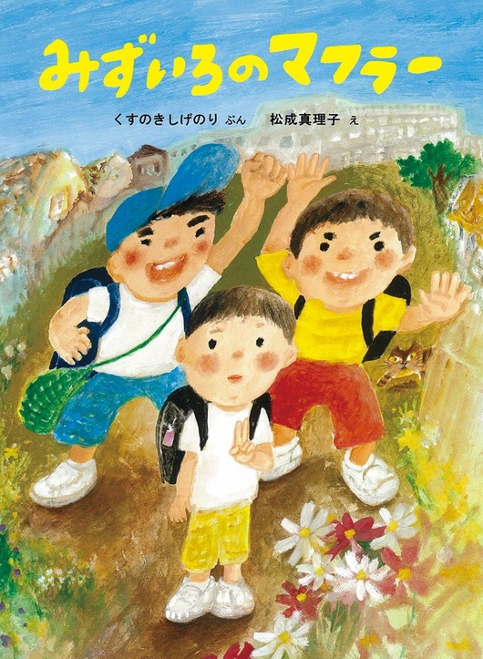

たくさんの絵本の中で たまたま読んでみて 印象に残った絵本を紹介します

転校生のヨースケは僕らの言うことは何でも言うとおりにした。 ある日いつものように僕らのランドセルを持たせていたら。 偶然ヨースケのおかあさんにあった。 おかあさんは「ヨースケはあなたたちを友達と言っているのよ」と怒られた。 それからヨースケとはいつものように遊べなくなった。 急に引っ越しが決まったヨースケに会いに行くと…。
子供のころにはいじめるわけでもなくやってしまうことはあるものです。 子供たちはそういうことの積み重ねで成長していくところもあるのでは ないでしょうか。 ヨースケと僕ら（二人）の立場を通じて友達とは何だろうと考えさせられます。 また、おかあさんの子供への思いもしっかりと感じられる作品です。 現在、販売されていませんが再販売が期待される絵本です。
子供のころにはいじめるわけでもなくやってしまうことはあるものです。 子供たちはそういうことの積み重ねで成長していくところもあるのでは ないでしょうか。 ヨースケと僕ら（二人）の立場を通じて友達とは何だろうと考えさせられます。 また、おかあさんの子供への思いもしっかりと感じられる作品です。 現在、販売されていませんが再販売が期待される絵本です。